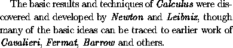
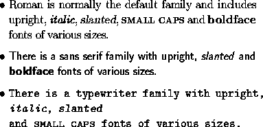
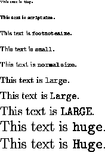
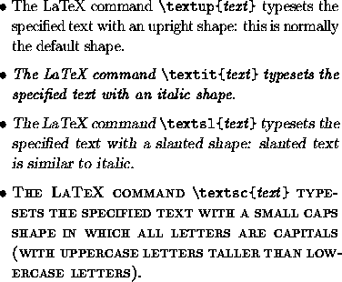
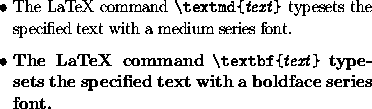

LaTeX has numerous commands for changing the typestyle.
The most useful of these is
\emph{text}
which emphasizes some piece of text, setting it
usually in an italic font (unless the surrounding
text is already italicized). Thus for example, the text
is obtained by typing
The basic results and techniques of \emph{Calculus}
were discovered and developed by \emph{Newton}
and \emph{Leibniz}, though many of the basic ideas
can be traced to earlier work of \emph{Cavalieri},
\emph{Fermat}, \emph{Barrow} and others.
Another useful font-changing command is
\textbf{text},
which typesets the specified portion of text in boldface.
A font family or typeface in LaTeX consists of a collection of related fonts characterized by size, shape and series. The font families available in LaTeX include roman, sans serif and typewriter:

The sizes of fonts used in LaTeX are can be determined
and changed by means of the control sequences
\tiny,
\scriptsize,
\footnotesize,
\small,
\normalsize,
\large,
\Large,
\LARGE,
\huge and
\HUGE:

The shape of a font can be upright, italic, slanted or small caps:

The series of a font can be medium (the default) or boldface:
If the necessary fonts are available, one can combine changes to the size, shape and series of a font, for example producing boldface slanted text by typing
\textbf{\textsl{boldface slanted text}}.
There are in LaTeX font declarations corresponding to the
the font-changing commands described above. When included in the
LaTeX input such declarations determine the type-style of the
subsequent text (till the next font declaration or the end
of the current `group' delimited by braces
or by appropriate \begin and \end
commands). Here is a list of font-changing commands and
declarations in text mode:
Command Declaration \textrm \rmfamily Roman family \textsf \sffamily Sans serif family \texttt \ttfamily Typewriter family \textup \upshape Upright shape \textit \itshape Italic shape \textsl \slshape Slanted shape \textsc \scshape Small caps shape \textmd \mdseries Medium series \textbf \bfseries Boldface series